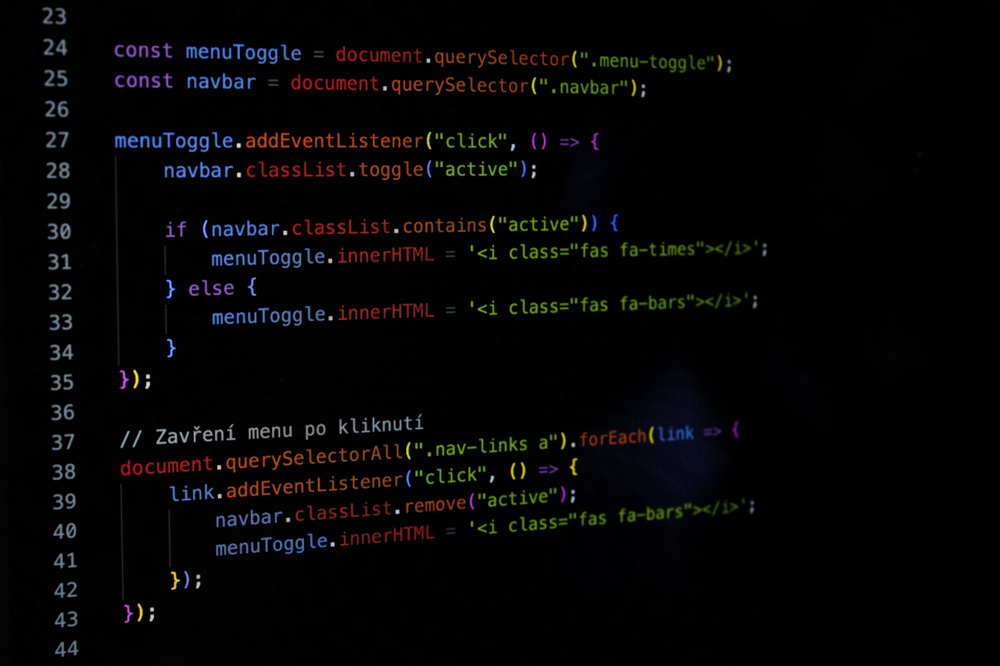
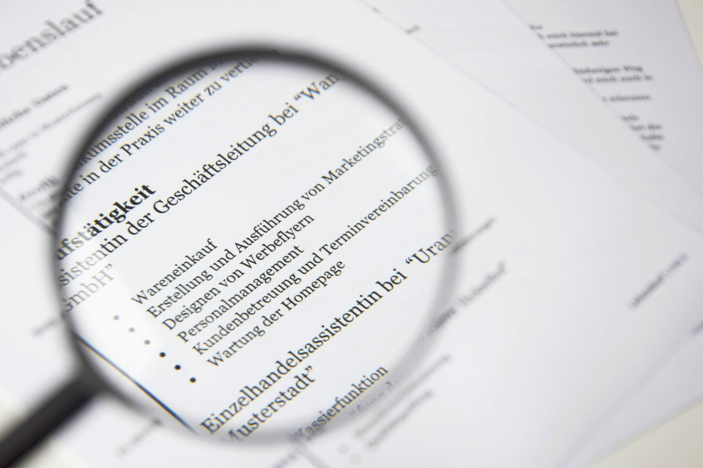

My Page
About Me
My name is Jast1k, and I specialize in developing modern web applications. I am deeply passionate about bridging functional code with clean, user-friendly design. I constantly learn new technologies to tackle increasingly complex digital challenges. Turning creative ideas into fully functional web products is what drives my work. I approach every project with enthusiasm, curiosity, and a strong eye for detail.
Projects
I recently completed building a responsive web application designed for intuitive task management. Currently, I am developing a community platform that helps users discover and review new books. Another ongoing project of mine is an interactive tool for visualizing public API data. I build all of my creations using modern code bases focused on speed and security. You can explore my source code, live demos, and documentation openly on GitHub.
Hobbies
In my free time, I enjoy taking digital photos and experimenting with photo editing software. I love hiking in the mountains to clear my mind away from computer screens. Reading tech articles and sci-fi novels is one of my favorite ways to stay inspired. I also have a passion for music and occasionally experiment with producing my own tracks. During the evenings, I often play board games or trivia games with my friends.

Info
Based in the Czech Republic, I am continuously working on my personal and professional growth. I communicate fluently in both Czech and English while actively picking up new language skills. I am open to exciting project collaborations, freelance work, and meaningful team opportunities. Feel free to reach out to me anytime via email or on my social media profiles. I am always happy to connect with fellow developers who share a passion for technology.
